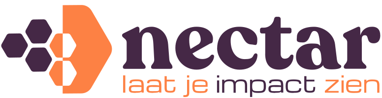
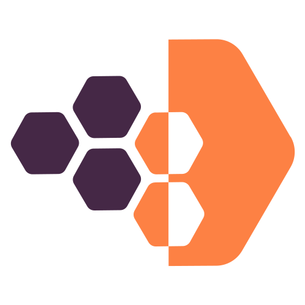

bannerbeeld
Meting
Zelfvertrouwen Q3
128 responses · laatst bijgewerkt 12 jul
Eén bron van waarheid voor de Nectar-huisstijl in website, app en rapporten. Kleuren en fonts zijn nu de definitieve merkwaarden zoals aangeleverd door de designer (juli 2026).
v0.4 — app-componenten (§09): knoppen, kaarten, tabs, modals, tabellen, save-bar, skeletonsNectar maakt sociale impact zichtbaar voor organisaties die geen datateam hebben. Elke ontwerpkeuze volgt uit deze vier principes:
Paars (aubergine) is de basiskleur voor achtergronden en koppen, crème de canvas-kleur, oranje het accent voor actie en nadruk. Daarnaast zijn er twee grote sectievlakken (paars en groen) en vier kleine kleurvlakken voor categorieën en data.
nectar-logo.svg gebruikt #fd8144 (oranje) en #452846 (paars); dat wijkt licht af van de merkwaarden #ef8a53 / #412944. Het SVG is as-is opgenomen in ./assets/. Even bij de designer bevestigen welke waarden leidend zijn.
Voor categorieën, stappen en data-visualisatie. Elk vlak heeft een vaste betekenis in grafieken (--cat-1 t/m --cat-4).
Op een kleurvlak mogen alléén de hieronder getoonde tekst- en icoonkleuren gebruikt worden. Zo blijft alles leesbaar en on-brand.
Bronspec noemt #48344c voor dit tekstvlak — te bevestigen.
Op elk klein vlak mag crème (#fcf8f0) als tekst/icoon, plus één extra donkere kleur per vlak.
Drie merk-fonts, elk met een vaste rol. De fonts zijn lokaal geleverd (./fonts/) en via @font-face gekoppeld — geen Google Fonts meer.
| Rol | Font | Gebruik |
|---|---|---|
| Display | Recoleta Bold | H1, H2, H5 · hero-koppen |
| Tech | Michroma Regular | H3, H4 · quotes |
| Body | Oak Sans Regular | Lopende tekst, UI, knoppen |
| Body — menu | Oak Sans Bold | Menu-items / navigatie |
| Body — label | Oak Sans Medium | H6 (in kapitalen), eyebrows, badges |
| Decoratief | Segoe Script Bold | Nog geen vaste rol — beschikbaar in --font-script |
8-punts systeem met 4px als half-stap. Container maximaal 1152px. Breakpoints: 640 (sm), 768 (md), 1024 (lg).
space-1 4pxspace-2 8pxspace-4 16pxspace-6 24pxspace-8 32pxspace-12 48pxspace-16 64pxspace-24 96px — tussen pagina-sectiesHet logo bestaat uit een beeldmerk (honingraat + chevron) en een woordmerk. Gebruik het volledige logo waar mogelijk; het losse beeldmerk voor kleine of vierkante toepassingen (favicon, app-icoon). De bronbestanden staan in ./assets/.

nectar-logo.svg
nectar-beeldmerk.svgPlaats het logo op crème of op een rustig vlak met voldoende vrije ruimte (minimaal de hoogte van het beeldmerk rondom). Op donkere vlakken een crème/witte versie gebruiken (nog aan te leveren).
De zeshoek (honingraat, uit het logo) en de chevron (beweging, vooruitgang) zijn de twee signatuurvormen. Gebruik ze voor foto-maskers, stap-markers en decoratieve clusters — maximaal één cluster per scherm.
Hoeken: afgerond (radius 12–24px in grote toepassingen). Foto's mogen in hexagon-maskers, altijd met echte mensen of werkcontext.
Eén primaire knop per scherm. Label = werkwoord + resultaat ("Plan een demo", niet "Verstuur"). Minimaal raakvlak 44×44px.
Samen bepalen we welke impact je wilt maken en meten.
Met gevalideerde vragenlijsten uit de meetstandaard.
Deel live rapportages met financiers en gemeenten.
Vergelijk met de sector en verbeter je aanpak.
"Het gaf mij de mogelijkheid om mijn impact transparant te delen en zo eenvoudiger financiering op te halen."— Deelnemende organisatie
De website verkoopt en legt uit. Grote typografie, veel lucht, mensen op de foto, één actie per sectie. De hero volgt altijd hetzelfde patroon: aubergine tekstvlak links, beeld rechts, één primaire CTA.
Betrouwbare inzichten geven je overtuigingskracht, leiden tot waardering en zorgen voor beter beleid.
Wissel achtergrondkleuren per sectie af zodat de pagina ademt. Vast ritme: crème → aubergine → crème → oranje (testimonial) → crème (CTA). Nooit twee donkere secties na elkaar.
space-24 (96px) verticale padding op desktop, space-12 op mobiel.De app is de werkomgeving: hier telt overzicht en snelheid, niet overtuiging. Zelfde tokens als de website, maar een rustiger toepassing: witte kaarten op crème, aubergine alleen in de navigatie, oranje uitsluitend voor de eigen data en primaire acties. Display-serif alleen voor paginatitels en KPI-getallen.
space-4/space-6 in plaats van space-8/space-16, tekst 14px als basis in tabellen.Nog geen metingen
Start je eerste meting en zie hier binnen een week je eerste resultaten.
Concrete uitwerking van §08: de componenten die de app vandaag hardgecodeerd tekent — knoppen, kaarten, tabs, modals, tabellen, save-bar en laadstatus — hertekend op de bestaande tokens. Puur additief: geen nieuwe tokenwaarden, alleen nieuwe componentregels/-klassen.
Zelfde knoppen als §06, maar compacter voor werkschermen (.btn-sm: space-2 / space-4, text-sm). Eén primaire per scherm. Destructief (.btn-danger) is tekst in --color-error zónder vlak; het rode vlak (.btn-danger-solid) verschijnt pas bij bevestiging in een modal. Raakvlak blijft 44×44px.
Eén schaduw (--shadow-card) i.p.v. de driedelige Material-schaduw die nu tientallen keren herhaald staat. Witte kaart op crème, radius --radius-md. Categorie-accent als dunne rand bovenaan via --cat-*, niet als gekleurd vlak.
128 responses · laatst bijgewerkt 12 jul
Categorie-accent via --cat-* — een dunne rand bovenaan i.p.v. een gekleurd vlak, zodat kaarten rustig blijven.
Vervangt de .secondary-tab-*-set (teal). Actief = aubergine tekst met oranje onderlijn, geen gekleurde vlakken. Voor filters een segment-variant (pill): actief = aubergine vlak met crème tekst.
Segment-variant (pill) voor filters:
Vaste vorm voor de ReactModal-schermen: overlay in aubergine-900 op 45%, paneel wit met --radius-lg en --shadow-raised, titel in display-serif, acties rechtsonder. De destructieve bevestiging is de enige plek met een rood knopvlak.
Kop in Oak Sans (accent) op crème-50, rijen gescheiden door --nectar-aubergine-100, zebra in crème-50 en hover licht oranje. Op mobiel worden rijen kaartlijsten (§08-regel).
| Meting | Responses | Status |
|---|---|---|
| Zelfvertrouwen Q3 | 128 | Actief |
| Welzijn nulmeting | 64 | Respons laag |
| Arbeidsparticipatie | — | Concept |
De .save-bar is nu een groene balk met groene knop — hier crème-50 met schaduw naar boven en de primaire actie in oranje. En de §08-regel "skeletons in crème-50, geen spinners" concreet gemaakt: dezelfde vorm als de kaart die laadt.
Skeleton in crème-50 met dunne aubergine-100 rand — dezelfde vorm als de KPI-kaart die laadt. Geen spinner op paginaniveau.
main.css, layout/, old/..secondary-tab-* (teal) in main.css.ReactModal-schermen; de losse rode knoppen worden de destructieve variant..save-bar in main.css..spinner-container (GIF).Foutmeldingen: benoem wat er misging en wat de gebruiker kan doen. Geen excuses, geen vaagheid. Lege schermen nodigen uit tot de eerste actie.
outline: none zonder alternatief).prefers-reduced-motion wordt gerespecteerd.Kopieer dit blok als tokens.css in website én app, zodat beide dezelfde bron delen. In React: importeer één keer globaal en gebruik var(--...) in alle componenten.
:root {
--nectar-aubergine-700: #412944; /* paars, primair merk */
--nectar-oranje-500: #ef8a53; /* accent / CTA */
--nectar-oranje-600: #D9661F; /* kleine tekst (AA) */
--nectar-creme-100: #fcf8f0; /* achtergrond */
--nectar-antraciet: #282d31; /* tekst op crème */
--nectar-groen-600: #435c52; /* groot groen vlak */
/* 4 kleine kleurvlakken / categorieën */
--nectar-groen-300: #9ac191; /* appelgroen · cat-1 */
--nectar-luchtblauw-400: #88a4bc; /* luchtblauw · cat-2 */
--nectar-lila-400: #a498b8; /* lavendel · cat-3 */
--nectar-geel-400: #e2c076; /* zonneschijn · cat-4 */
--font-display: 'Recoleta', serif; /* H1, H2, H5 */
--font-tech: 'Michroma', sans-serif; /* H3, H4, quotes */
--font-body: 'Oak Sans', sans-serif; /* body, menu, H6 */
--space-4: 1rem; --space-8: 2rem; --space-16: 4rem;
--radius-md: 12px; --radius-pill: 999px;
}
De volledige set staat in de <style>-sectie van dit document.
| Versie | Datum | Wijziging |
|---|---|---|
| v0.1 | 15 juli 2026 | Eerste versie op basis van brandbook-PDF |
| v0.2 | 15 juli 2026 | Website-sectie en app-sectie (voorzet) toegevoegd: app-shell, KPI-kaarten, benchmark-balken, empty state, toast |
| v0.3 | 15 juli 2026 | Definitieve merkbestanden verwerkt: fonts (Recoleta, Michroma, Oak Sans + Segoe Script) via lokale @font-face; definitief kleurenpalet (#412944 / #ef8a53 / #fcf8f0 / #282d31 / #435c52); 4 categorie-kleurvlakken; kleurvlak-/tekstcombinatie-regels; logo- en beeldmerk-SVG opgenomen |
| v0.4 | 15 juli 2026 | §09 app-componenten toegevoegd (uit design-handoff): app-maat + destructieve knoppen, kaarten/lijstrijen, tabs + segment-pills, modals, data-tabel, save-bar en skeletons — als herbruikbare klassen op bestaande tokens |
nectar-logo.svg gebruikt #fd8144/#452846, het palet #ef8a53/#412944 — bevestigen welke leidend is en het SVG evt. hertekenen.--font-script).main.css-varianten — zie §09 "wat elk component vervangt").